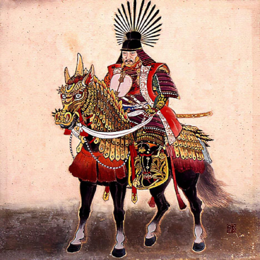

Toyotomi Hideyoshi, também grafado Toitomo Hideióxi[1] também chamado Hashiba Hideyoshi (17 de março de 1537 – 18 de setembro de 1598), foi um daimyo do Período Sengoku que unificou o Japão. Ele sucedeu seu antigo senhor feudal, Oda Nobunaga, e trouxe um fim ao Período Sengoku. O período de seu governo é muitas vezes chamado de período Azuchi-Momoyama. Dessa fase originou-se um certo número de heranças culturais, incluindo a restrição de que apenas os membros da classe dos samurais poderiam portar armas. Hideyoshi é considerado como o segundo "grande unificador" do Japão, após Oda Nobunaga e antes de Ieyasu Tokugawa. Esse também é considerado um dos maiores tiranos da história, responsável por matar mais de 60 mil cristãos em solo japonês. O caso mais conhecido é o caso dos 26 mártires do Japão.
Início da vida
Muito pouco é conhecido sobre Hideyoshi antes de 1570, quando ele começa a aparecer em documentos e cartas remanescentes. Sua autobiografia começa em 1577, mas nela Hideyoshi falou muito pouco sobre seu passado. Por tradição, ele nasceu na atual Nakamura-ku, Nagoya (naquele tempo, o local pertencia a Província de Owari), a casa do clã Oda. Ele nasceu de linhagem não samurai, filho de um camponês-guerreiro chamado Yaemon. Ele não tinha sobrenome. Em sua infância, fora lhe dado o nome de Hiyoshi-maru ("Recompensa do Sol"), embora existam variações.
Toyotomi Hideyoshi tinha recebido o apelido de Kozaru, que significa "pequeno macaco", de seu senhor Oda Nobunaga, por causa de suas características faciais e de seu corpo magro e semelhante ao de um macaco.
De acordo com Toshiie Maeda e um missionário europeu chamado Luís Fróis, Hideyoshi era polidáctilo, com dois dedos polegares em sua mão direita. Ele não amputou o seu polegar extra como outros japoneses deste período teriam feito.
Muitas lendas descrevem Hideyoshi sendo enviado para estudar em um templo como homem jovem, mas que ele rejeitou a vida no templo e foi em busca de aventura. Sob o nome de Tōkichirō Kinoshita, ele ingressou no clã Imagawa como servo de Matsushita Kahei. Ele percorreu todo o caminho para as terras de Imagawa Yoshimoto, daimyo de Província de Suruga, e serviu por um tempo, só para fugir com uma quantia de dinheiro que lhe fora confiada por Matsushita Yukitsuna.
Ascensão ao poder
Por volta de 1547 ele retornou à província de Owari e aderiu ao clã Oda, liderado por Oda Nobunaga, como um humilde servo. Ele se tornou um dos "portadores da sandália" (servidores pessoais) de Nobunaga - e esteve presente na Batalha de Okehazama em 1560, quando Nobunaga derrotou Imagawa Yoshimoto para se tornar um dos mais poderosos chefes militares do período Sengoku.
Hideyoshi foi muito bem sucedido como um negociador. Em 1564 ele conseguiu convencer, um número de samurais da Mino a desertar do clã Saito e convenceu-os a apresentarem-se a Nobunaga, incluindo o estrategista do clã Saito, Takenaka Hanbei.
A fácil vitória de Nobunaga no Castelo Inabayama, em 1567, foi, em grande parte, devida aos esforços da Hideyoshi e, apesar da sua origem camponesa, Hideyoshi se tornou um dos mais ilustres generais de Nobunaga, tomando o nome de Hashiba Hideyoshi. Esse nome era derivado de dois caracteres, cada um deles tomado dos nomes dos dois generais mais importantes de Nobunaga, Niwa Nagahide e Shibata Katsuie.
Hideyoshi conduziu tropas na Batalha de Anegawa, em 1570, na qual Oda Nobunaga, aliado ao futuro rival Tokugawa Ieyasu para sitiar duas fortalezas do Clã Azai e o Clã Asakura. Em 1573, após a vitoriosa campanha contra a Azai e Asakura, Nobunaga nomeou Hideyoshi daimio de três distritos na parte norte da província de Omi. Inicialmente baseado no antigo quartel-general do Clã Azai em Odani, Hideyoshi mudou-se para Kunitomo, e renomeou a cidade Nagahama em homenagem a Nobunaga. Hideyoshi mais tarde mudou-se para o porto em Imahama no Lago Biwa. De lá, ele começou a trabalhar no Castelo Imahama e assumiu o controle da fábrica de armas de fogo de Kunitomo, que havia sido estabelecida alguns anos antes pelos Azai e pelos Asakura. Sob a administração de Hideyoshi, a produção da fábrica de armas de fogo aumentou dramaticamente.
Após os assassinatos de Oda Nobunaga e de seu filho mais velho Nobutada, em 1582, pelas mãos de Akechi Mitsuhide, Hideyoshi buscou vingança e derrotou Akechi na Batalha de Yamazaki.
Numa reunião em Kiyosu para decidir sobre um sucessor de Nobunaga. De um lado, o general em chefe do Clã Oda, Shibata Katsuie, apoiou Oda Nobutaka como sucessor de seu paí. De outro, Hideyoshi decidiu apoiar o filho mais novo de Nobunaga, Oda Hidenobu. Após ter ganho o apoio dos outros dois anciãos do Clã Oda, Niwa Nagahide e Ikeda Tsuneoki, Hideyoshi fortaleceu a posição de Hidenobu e ao mesmo tempo fez crescer sua influencia dentro do Clã. Rapidamente aumentou a tensão entre Katsuie e Hideyoshi, dando início a Batalha de Shizugatake no ano seguinte, após a qual Hideyoshi derrotou a Shibata e, assim, consolidou seu próprio poder, absorvendo a maior parte do clã Oda para seu controle.
Em 1583, Hideyoshi começou a construção de Castelo de Osaka. Construída no local do templo Ishiyama Honganji destruído por Nobunaga, o castelo passaria a ser o último reduto do clã após sua morte.
Nobunaga tinha outro filho, Oda Nobukatsu, que manteve-se hostil a Hideyoshi. Ele aliou-se com Tokugawa Ieyasu, e os dois lados lutaram nas inconclusivas Batalhas de Komaki e Nagakute. E, em última instância, resultou em um impasse, apesar de as forças Hideyoshi terem sofrido um rude golpe. Por último, Hashiba fez a paz com Nobukatsu, terminando o pretexto para a guerra entre os Tokugawa e os clãs de Hashiba. Hideyoshi enviou Tokugawa Ieyasu mãe e sua irmã mais nova como reféns. Ieyasu finalmente concordou em se tornar um vassalo de Hideyoshi.
Ápice do poder
Como Nobunaga antes dele, Hideyoshi nunca procurou o título de shogun, apesar de descender da família de regentes Fujiwara e possuir vários altos títulos imperiais, incluindo, em 1585, o prestigioso cargo de regente. Ele construiu um grandioso palácio, o Jurakudai, em 1587, onde recepcionou o Imperador reinante Go-Yozei, no ano seguinte.
Posteriormente, Hideyoshi subjugou a província de Kii e conquistou Shikoku sob o controle do clã Chōsokabe. Ele também assumiu o controle da província de Etchū e conquistou Kyushu. Em 1587, Hideyoshi baniu os missionários cristãos de Kyushu, que exerciam grande influência sobre os daimyos cristãos da ilha. No entanto, uma vez que o comércio com os europeus era muito intenso, os excessos individuais dos cristãos foram oficiosamente esquecidos. Em 1588, Hideyoshi proibiu camponeses comuns de possuir armas e começou a “caça à espada” para confiscar armas. As espadas foram derretidas para criar uma estátua de Buda. Esta medida efetivamente parou as revoltas camponesas e garantiu uma maior estabilidade em detrimento da liberdade dos daimyos individuais. Em 1590, realizou o Cerco de Odawara contra o grande clã Hojo, na região de Kanto.
Depois da morte do único filho de Hideyoshi, Tsurumatsu, em setembro de 1591, aos três anos de idade, a estabilidade da dinastia Toyotomi foi posta em dúvida. Quando o seu meio-irmão Hidenaga morreu pouco depois de seu filho, Hideyoshi, adotou seu sobrinho Hidetsugu, como seu herdeiro, em janeiro de 1592. Hideyoshi demitiu-se do cargo de kampaku para tomar o título de taiko (regente aposentado). Hidetsugu sucedeu-o como kampaku.
Declínio e morte
Sua saúde começou a enfraquecer, mas, ainda ansiando por alguma realização para solidificar o seu legado, Hideyoshi aprovou o sonho de uma conquista japonesa da China que Oda Nobunaga tinha previsto e lançado através de duas malfadadas invasões da Coreia. Embora ele realmente pretendesse conquistar a Dinastia Ming, forças japonesas nunca foram além da península coreana. Hideyoshi comunicou-se com os coreanos em 1587 solicitando uma passagem para a China. Como aliados da China Ming, os coreanos, primeiramente, recusaram conversações inteiramente e, em abril e julho de 1591, negaram que tropas japonesas marchassem através da Coreia. Em agosto, Hideyoshi ordenou preparativos para a invasão.

Toyotomi Hideyoshi montado em um cavalo
Na campanha, forças japonesas foram inicialmente muito bem sucedida. Em Maio de 1592, Seul foi ocupada, e em apenas quatro meses, as forças Hideyoshi teve um percurso em Manchuria e ocupou grande parte da Coreia. No entanto, apesar do sucesso japonês em terra (na verdade, o comandante Kiyomasa Kato tivesse seguido a costa leste da Coreia do que é agora Manchuria), forças navais sob Almirante Yi Sun-sin cedo contra-atacou a frota japonesa, cortando as linhas de abastecimento do exército japonês e eficazmente estrangular a invasão da Coreia. Em 1593, o imperador chinês ming Wanli enviou um exército sob o comando do almirante Li Rusong para bloquear a planejada invasão da China e recapturar a península coreana. As forças chinesas e coreanas expulsaram o exército japonês a partir de Seul e Pyongyang. A guerra chegou a um impasse e, após a conclusão de um acordo de cessar-fogo, as tropas japonesas recuaram para o Japão.
O nascimento do segundo filho de Hideyoshi, Hideyori, em 1593, criou um potencial problema na sucessão. Para evitar isso, Hideyoshi exilou o seu sobrinho e herdeiro Hidetsugu para o Monte Koya e ordenou-lhe que cometesse suicídio em Agosto de 1595. Os membros da família de Hidetsugu que não seguiram o seu exemplo, foram em seguida assassinados em Kyoto, incluindo 31 mulheres e várias crianças.
Toyotomi Hideyoshi faleceu em setembro de 1598. Sua morte foi mantida em segredo pelo Conselho dos Cinco Regentes ( 五大老 Go-Tairō) para preservar o moral. Não foi até finais de Outubro que enviou um decreto para os comandantes japoneses de se retirar.